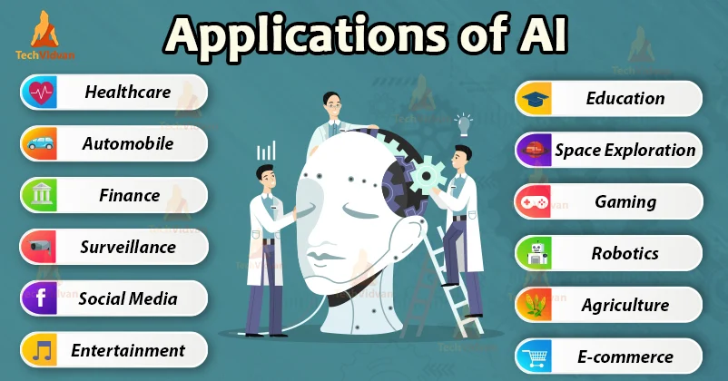

Applications of Artificial Intelligence

Artificial Intelligence (AI) has numerous applications across various fields and industries. Here are some examples:
- Healthcare: AI is used in healthcare to improve patient outcomes, disease diagnosis, and drug development. AI is also used in robotic surgery, monitoring vital signs, and identifying patterns in large datasets to develop new treatments.
- Finance: AI is used in the finance industry to automate tasks such as fraud detection, risk assessment, and credit scoring. It is also used to provide personalized investment advice and to optimize trading strategies.
- Transportation: AI is used in the transportation industry to optimize traffic flow, reduce congestion, and improve safety. Self-driving cars and trucks are an example of AI in transportation.
- Manufacturing: AI is used in manufacturing to automate tasks such as quality control, predictive maintenance, and supply chain management. It is also used to optimize production processes and improve product quality.
- Retail: AI is used in retail to improve customer service, optimize pricing strategies, and personalize marketing efforts. AI is also used in inventory management to optimize stock levels and reduce waste.
- Agriculture: AI is used in agriculture to optimize crop yields, reduce waste, and improve efficiency. AI is also used in precision agriculture to provide real-time data on weather, soil moisture, and other factors that affect crop growth.
- Education: AI is used in education to personalize learning and provide feedback to students. AI is also used to develop educational software and to improve the quality of educational materials.
- Entertainment: AI is used in the entertainment industry to recommend content to users, personalize user experiences, and automate tasks such as video editing and animation.
These are just a few examples of how AI is being used in various industries. As technology continues to evolve, we can expect to see even more applications of AI in the future.